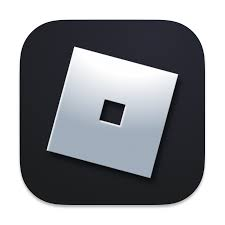
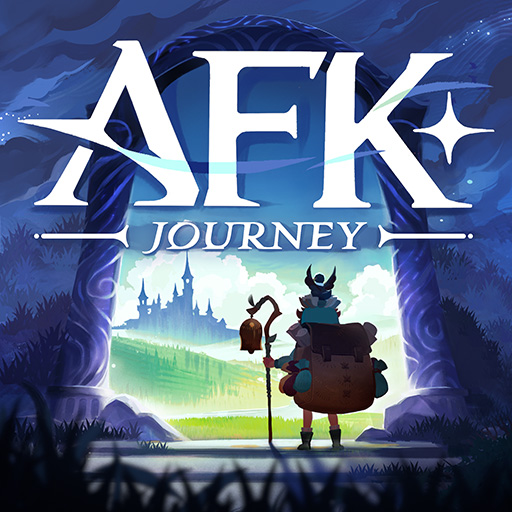
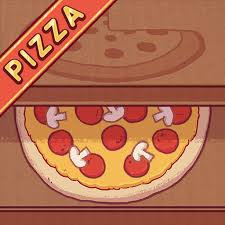
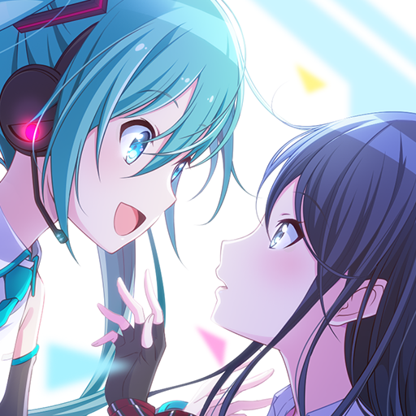
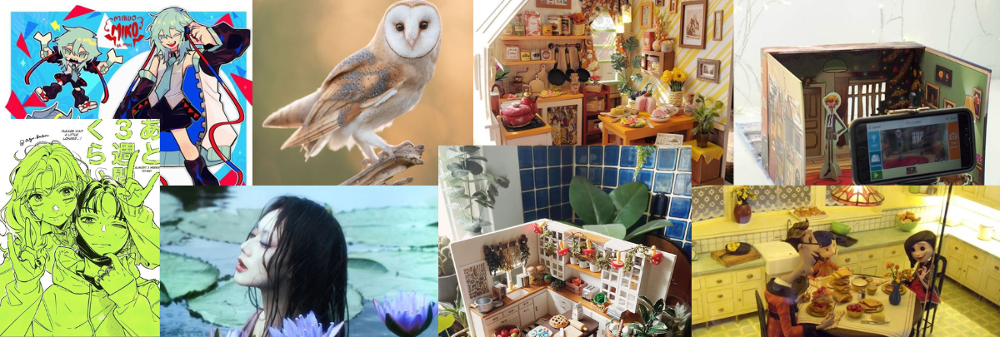

Personal Information:
ACADEMIC BACKGROUND:
ELEMENTARY: I went to West City Science Elementary school or WCES from kinder to grade 6.
jashhd
HIGH SCHOOL: Currently, my high school from grade 7-9 is Ramon Teves Pastor Memorial hdsddhdg Dumaguete Science High School or RTPM-DSHS.
jashhd
SUBJECTS (Alright to Least Alright)
slshhd 84% English
shhd 77% Enhanced Science (Environmental)
slshhd 69% Arpan (History)
shhd 53% MAPEH
shhd 50% Advanced Chemistry
slshhd 50% Filipino
shhd 50% ICT
shhd 45% MATH B
slshhd 45% MATH A
shhd 43% Research
shhd 30% ESP
INTERESTS/HOBBIES
-
VIDEO GAMES
I am interested in a lot of games, mostly mobile games which I can play on my phone. These are the games I play:
- GENSHIN IMPACT

- ROBLOX

- AFK JOURNEY

- Candies and Curses
- Good Pizza, Great Pizza

- Overwatch
- Colorful Stage

-
SONGS
I don’t have a specific singer I listen to, but I do have a favorite band which is “The Neighbourhood ”.
I often enjoy listening to music while doing something except when doing school work because I get distracted.
Some of the favorite songs:
- The Beach - The Neighbourhood
- Cherry Flavoured - The Neighbourhood
- Nervous - The Neighbourhood
-
ART
I find myself engaging in social media posts or videos involving different
types of arts such as drawing, photography,
crafting miniature things, stop-motion, and others.

|